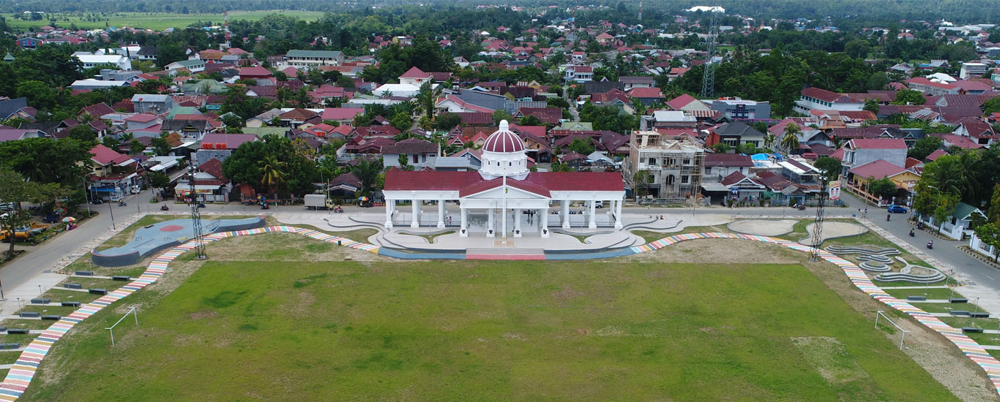

1. Kondisi Geografis Kota Palopo
Kota Palopo secara geografis terletak antara 2°53'15" 3°04'08" Lintang Selatan dan 120°03'10" 120°14'34" Bujur Timur.
Kota Palopo yang merupakan daerah otonom kedua terakhir dari empat daerah otonom di Tanah Luwu. Secara Geografis Kota Palopo Kurang Lebih 375 Km dari Kota Makassar ke arah Utara dengan posisi antara 120 derajat 03 sampai dengan 120 derajat 17,3 Bujur Timur dan 2 derajat 53,13 sampai dengan 3 derajat 4 Lintang Selatan, pada ketinggian 0 sampai 300 meter di atas permukaan laut.
Kota Palopo di bagian sisi sebelah Timur memanjang dari Utara ke Selatan merupakan dataran rendah atau Kawasan Pantai seluas kurang lebih 30% dari total keseluruhan, sedangkan lainnya bergunung dan berbukit di bagian Barat, memanjang dari Utara ke Seatan, dengan ketinggian maksimum adalah 1000 meter di atas permukaan laut.
Kota Palopo sebagai sebuah daerah otonom hasil pemekaran dari Kabupaten Luwu, dengan batas-batas:
Sebelah Utara berbatasan dengan Kecamatan Walenrang Kabupaten Luwu,
Sebelah Timur dengan Teluk Bone,
Sebelah Selatan berbatasan dengan Kecamatan Bua Kabupaten Luwu,
Sebelah Barat berbatasan dengan Kecamatan Tondon Nanggala Kabupaten Tana Toraja.
2. Luas Wilayah
Luas wilayah administrasi Kota Palopo sekitar 247,52 kilometer persegi atau sama dengan 0,39% dari luas wilayah Propinsi Sulawesi Selatan. Secara administratif Kota Palopo terbagi menjadi 9 Kecamatan dan 48 Kelurahan.
Sebagian besar Wilayah Kota Palopo merupakan dataran rendah sesuai dengan keberadaanya sebagai daerah yang terletak di pesisir pantai. Sekitar 62,00 persen dari luas Kota Palopo merupakan daerah dataran rendah dengan ketinggian 0-500 m dari permukaan laut, 24,00 persen terletak pada ketinggian 501-1000 m sekitar 14,00 persen yang terletak diatas ketinggian lebih dari 1000 m.
Dari segi luas nampak bahwa Kecamatan terluas adalah Kecamatan Wara Barat dengan luas 54,13 km2 dan yang tersempit adalah Kecamatan Wara Utara dengan luas 10,58 km2.
3. Kondisi Geografis Kecamatan Wara
Kecamatan Wara secara geografis terletak pada koordinat 3°00′12"S 120°11'33"E, Batas Kecamatan Wara sendiri dari ujung timur berbatasan dengan Kecamatan Wara Timur, di bagian utara berbatasan dengan Wara Utara, di bagian barat berbatasan dengan Kecamatan Mungkajang dan di bagian selatan berbatasan dengan Kecamatan Wara Selatan.
4. Pengertian Rumah Ibadah
Rumah ibadah merupakan suatu tempat yang digunakan oleh sekelompok umat beragama untuk melakukan ibadah sesuai kepercayaan yang di anut. Di Kecamatan Wara sendiri memiliki 8 gereja dan 20 masjid.